LaTeX 101 - An Introduction
Research Bazar (ResBaz) 2023
The University of Auckland
Monday, June 26, 2023
What is \(\LaTeX\)?
Pronounciation: /ˈlɑːtɛk/ or /ˈleɪtɛk/
\(\LaTeX\) is a typesetting system and has been around since 1984
Can be hard to get started, but is becoming more and more accessible
Think of it as combining content with programming to control how that content should be displayed
Getting the actual output (often a pdf) requires compilation
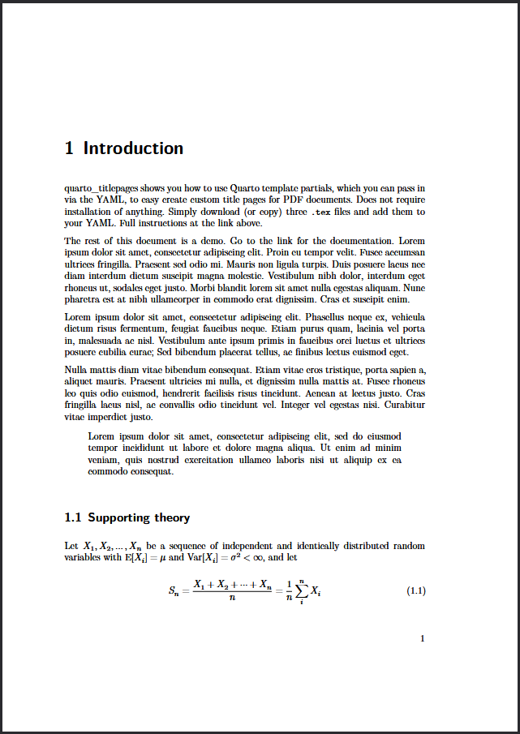
What you see…
WYSIWYM
Latex, Markdown, HTML and other formats are “What you see is what you mean”
Seperates content from presentation
Harder to learn, more powerful, and more control over presentation
Can automate a lot of tedious work
Collaboration tools more recent (e.g.: Overleaf)
WYSIWYG
Most word processors (Word, Google Docs, etc.) are “What you see is what you get”
More intuitive to use, more interactive
Much less powerful, fiddly to get right, and can involve a lot of tedious work
Have had better collaboration tools (i.e.: comments, track changes, suggest mode)
What is it for?
Articles
Articles Theses Books
Reports
Reports
Factsheets
Forms
Repeatable layouts & auto-generated content
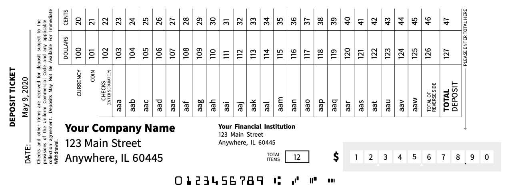
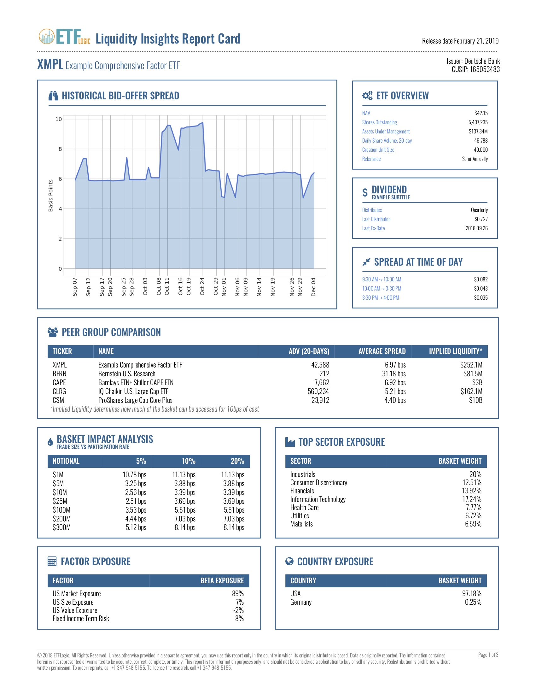
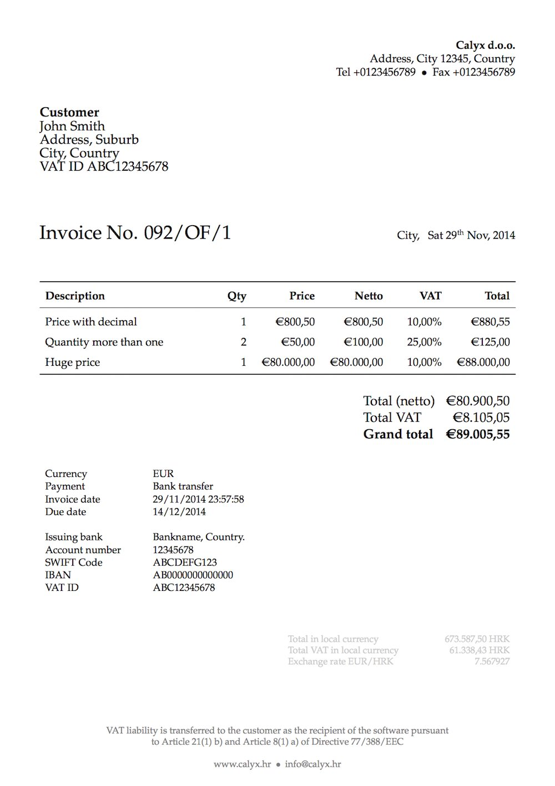
Presentations
Beamer template for presentations
Note - this website/presentation was built using Quarto & RevealJS
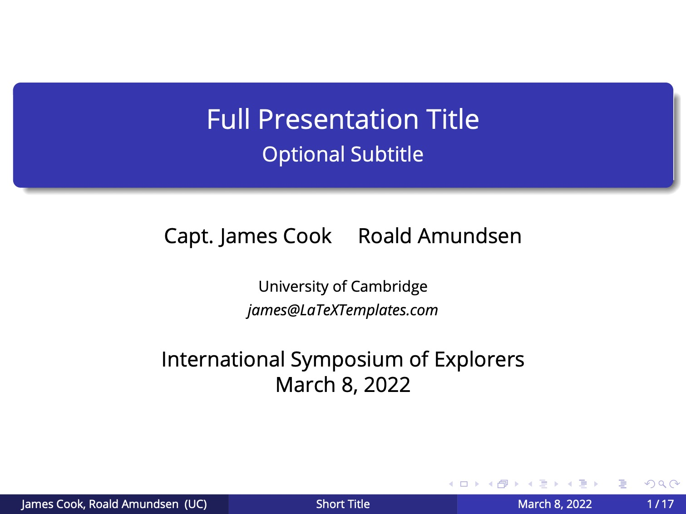
Why use \(\LaTeX\)
- It separates content from formatting, letting you focus on writing and fiddling
- Cross-platform compatibility (Windows, Mac, Linux, iOS, …)
- There is a wide community and often several ways to get things done. It is rare that you are the first to ask a question.
- Opens up several other tools, e.g.: quarto, pandocs
- Most of the (good) books, journal articles, etc. are created using \(\LaTeX\)
Advantages
- (good) \(\LaTeX\) output looks epic (at least in most cases)
- it decides where pictures are placed
- maths is neatly rendered
- how line-breaks happen (justify text is using a dictionary for line-breaks, unlike many wysiwyg editors)
- multi-column layouts on one page
- it is free and not tied to any big corporation, you can often write in any text editor, browser etc.
- it is no closed source file (unlike a .docx or so) this means we can use Git(Hub) EXAMPLE and other version control systems (we can run things like a
diffon it, EXAMPLE CODE GOES HERE)- no proprietary software that
- might disappear from the market
- charges you an arm and a leg especially over time with a subscription model (yes, I am looking at you, Adobe)
- means you can keep this compeltely offline/local/no-cloud, etc. good for Ethics Approvals and sensitive data, …
- no proprietary software that
- you can mostly get outputs to several outputs with altering a few lines (vs. clicking on every slide or here and there)
Advantages - continued
- you can customise it heavily
- you can have inline comments (for future you, for your supervisor, to toggle things on/off)
- If you ingest some code, tables, data, a lot of figures ResBaz Workshop Python for image manipulation and repeatable research pipelines, you will learn to love \(\LaTeX\)
- Referencing is quite easy, especially if paired with a reference manager such as Zotero, see ResBaz session Managing References With Zotero
- Maths! \(f_{c}=z^{2}+c\) AND Mathpix Snipping
- Plotting (again some learning curve, but no Excel to Word to something schenanigans where you might miss out the latest version of a file and try to publish something wrong)
- same goes for citations, referencing figures, placing figures (yes, you can specify that it shall be right there where you want it, but you can also let \(\LaTeX\) work it’s magic)
- Portability: \(\LaTeX\) documents are portable and can be easily converted to other formats, such as PDF, HTML, or EPUB.
Advantages - continued
Symbols often render very neatly, sometimes workarounds are needed
For Macrons a more advanced approach is described here, as Unicode is mostly used, you can type Māori (so on a Mac use the long-press option ā to write Māori or change the keyboard style) or copy-paste such characters.
Seperate content & presentation
Allowing re-use, especially with modern tools to generate different outputs
Disadvantages
Note
There is a trade-off between time invested upfront (learning \(\LaTeX\) etc. vs. and time saved in the long-run. As many of you might work on their PhD thesises, this time balance one day before the deadline vs. some hours or days can’t be traded-off 1:1
it takes time to learn (Overleaf and other more relevant UI etc. make it easier)
it can be very fiddely (if you want specifics with tables, or placing images)
the collaboration features are quite limited out of the box, yes, a lot can be done, but that mostly requires you to a) bring/acquire some coding knowledge, b) invest time; here, MS Word Clearly wins
plugins such as Grammarly don’t work ootb, for VSCode, you can integrate these as an Extension, on Overleaf there is a buggy workaround
Some standard operations require the use of extra packages or tools - e.g.: XeLaTex for non-latin alphabets
What can it do?
Equations
\(\beta_R = {{m b_R a^2 c e^{(-\delta n)}}\over{{\delta+a c ({{Y_{S}+Y_{R}}\over{Y_S + Y_R + X}})}}}\)
\beta_R = {{m b_R a^2 c e^{(-\delta n)}}\over{{\delta+a c ({{Y_{S}+Y_{R}}\over{Y_S + Y_R + X}})}}}
FLoating figures
Visualisation in PSTricks
Visualisations in TikZ
Example showing the power of the TikZ package
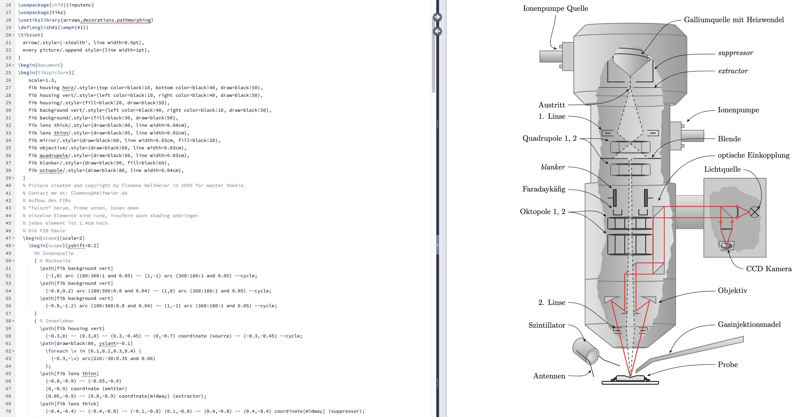
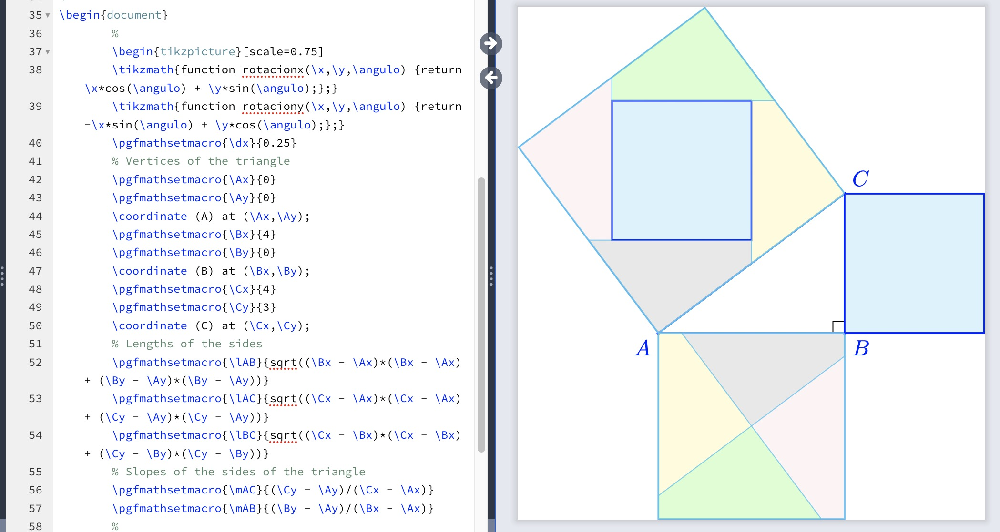
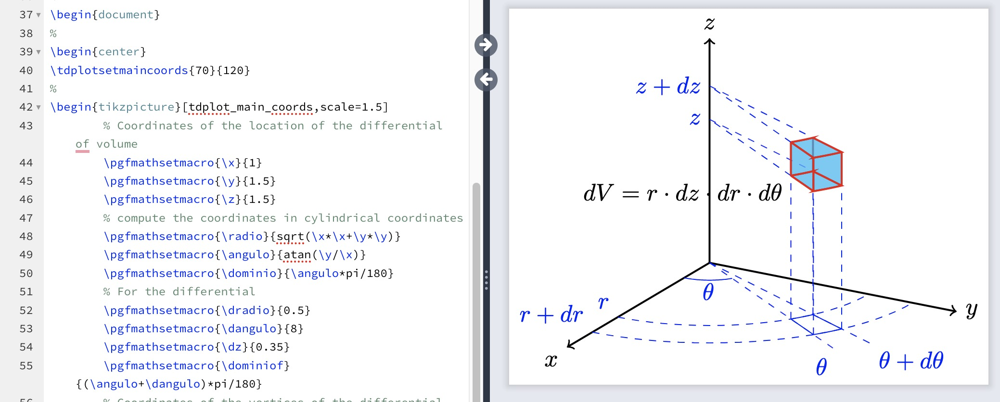

Easily go from one to two column layouts
Maths/Formulae
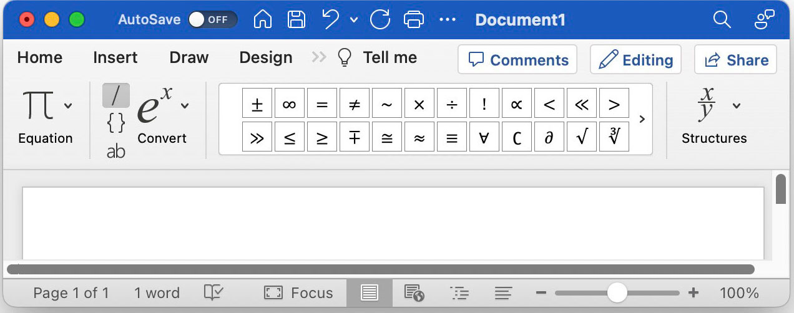
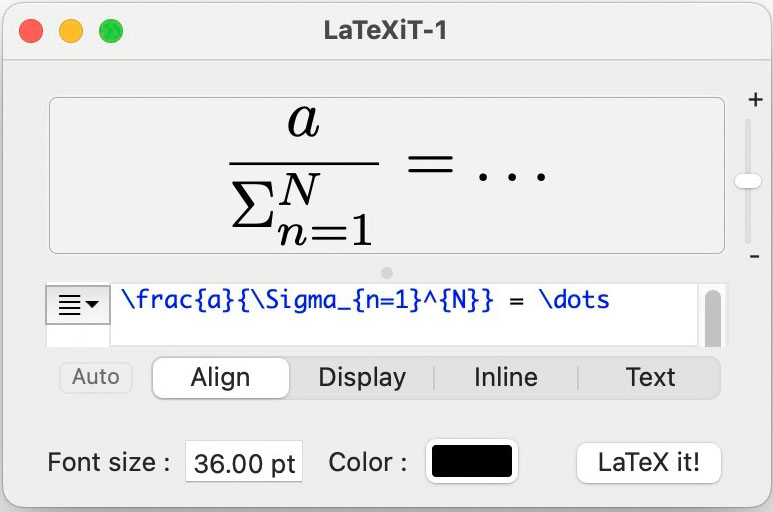
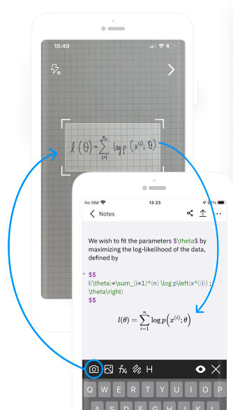
Pain points \(\LaTeX\) fixes
Breaking changes
Some things are possible in traditional word-processors, but hard and/or fragile.
Many points-of-no-return, where you either implement a fragile solution that will break if other things change, or switch off some of the automated formatting done by the word processor.
Seperate content & formatting
- \(\LaTeX\) allows you to write content now and worry about formatting later
- You still need to specify structure by inserting e.g.: \section, \begin{figure}, \begin{tabular}, ***, etc.
- You don’t need to worry about how those will look until later
- When you do alter the formatting, it effects the whole document - no need to individually change the numbering system of every figure/table/equation (e.g.: \(1a, 1b \rightarrow 1.1, 1.2\))
Floating figures
- Figures (and optionally any other content) in \(\LaTeX\) float, which means that they are inserted where they fit best, e.g.: in between paragraphs, on a page where that won’t leave an awkward gap, or on their own pages
- You can exert control over these options, prefering here, the top or bottom of a page, or on a float only page
- This is especially powerful as you add/remove figures and text, as they generally float to somewhere that looks good, rather than needing to manually move figures between pages when changing content
Updating figures
- Figures (also tables from csv, and citations from BibTeX) are loaded from a file when you build the document (e.g.: \(./figures/my_plot.png\))
- This means that if the content of the target file changes, so will the figure in the output document when it is built
- This is especially useful if you generate figures from code - you can change the figure format in code, regenerate all your figures, then build the \(\LaTeX\) document to see all the changes
- This saves you manually inserting each figure every time it changes
Internal links
- You can place tags on almost any element in \(\LaTeX\) (e.g.: a section, figure, table, equation, footnote etc.)
- These can then be reference from anywhere else in the document, either pointing directly to that element (equation 3.1) or to the page that element is on (page 26)
- These links are made at build time, so if you add more equations, those links may change to equation 3.2 on page 27 automatically
- Some word processors have a similar feature, but they are famously brittle
- This also works for automatic generation of tables of contents, tables of figures, etc.
- This links are clickable in most PDF readers
- Citations can also be linked to by short form (Smith et. al, 2000), author (Smith et al. wrote…), year (previous work done in 2000), etc. all of which are clickable
Version control
- \(\LaTeX\) files are plain text, which means that they work well with version control tools such as Github
- This also gives access to additional tools such as diff, branches and pull requests for collaboration
- Using version control gives you a complete history of the state of your document, allowing you to recover old versions, or compare them to the current state
- That complete history gives the confidence to make more drastic changes
Linked/external files
Because of LaTeXIt knowing the syntax can help you with creating vis. for your PowerPoint, Slides, … Presentation
Formatting
more…?
Tables
Packages
Style files + templates
- Template
- Resulting in a neat design (including page numbers in roman, arabic or intentionally omitted)
- Shows how to get certain things done (Part, Section, Sub-Section, labels,…)
- There are other templates of Overleaf by the UoA
Pain points!
References
Files
Bibliography
Version control
Contents/index/glossary
More - packages
Pointers to other closely related sessions
We have one further session: https://resbaz.auckland.ac.nz/schedule/#session-114
Wednesday Morning: \(\LaTeX\), or how I learnted to stop worrying and love plain text
Tuesday Afternoon: Introduction to Quarto
Friday Morning: Authoring Collaborative Research Projects in Quarto
Wednesday Afternoon: Managing References With Zotero, see also https://retorque.re/zotero-better-bibtex/
Version Control (GitHub) is efficient as \(\LaTeX\) uses plain text files, comparisons (diff) work on this, while they wouldn’t on a proprietary MSWord *.docx file
Spreadsheets only for data entry, but for ‘data wrangling’: Python, R, OpenRefine
\(\LaTeX\) guides and references
Overleaf PDF also as a website
ResBaz 2023 | Nelis Drost, (Jens Brinkmann) | LaTeX 101